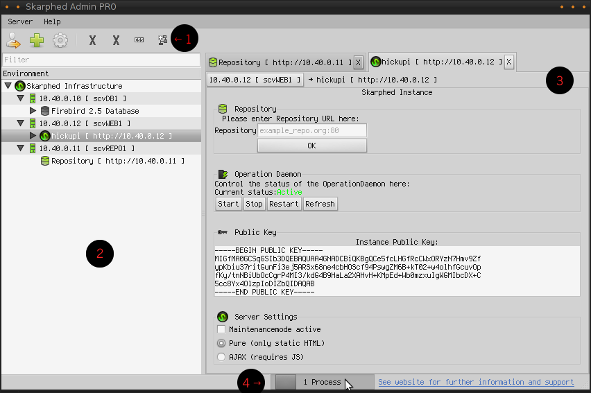

The User Interface

Understanding the user interface
The skarphed gui consists of the following components. A toolbar (1), the object tree (2), the object pages (3), and the process-display (4):
- The object tree:
The object Tree displays objects known to your profile. These may be servers, skarphed-cores, modules, databases and more. They all are displayed here in a hierarchical order.
- The Object Pages:
Every object that you want to inspect in detail is being displayed here. Each object has a corresponding objectpage that will be opened if you doubleclick the object in the objecttree. You can have opened multiple objects simultaneously and switch trough them using the tabs. You can close an objectpage by clicking the X in the objectpage's tab.
- The Toolbar:
The first three items of the toolbar let you do the following things (from left to right): Log out of your current profile, adding a server, view the PKI-settings for your current installation (you only need this if you are a template- or a module-developer). Depending on the object that you currently work with, there will be more or less entries displayed on the toolbar. These are the actions that can be performed on your currently active object. These functions will be talked about in the section inside skarphed
- The process-display
Your skarphed-admin communicates with many servers. When there are active communicationprocesses, the process-display will move and show you how many processes there are. When you click on the process-display, a panel will open. Every backgroundprocess that skarphed does is listed on it. Some processes can be canceled you if necessary via this panel.